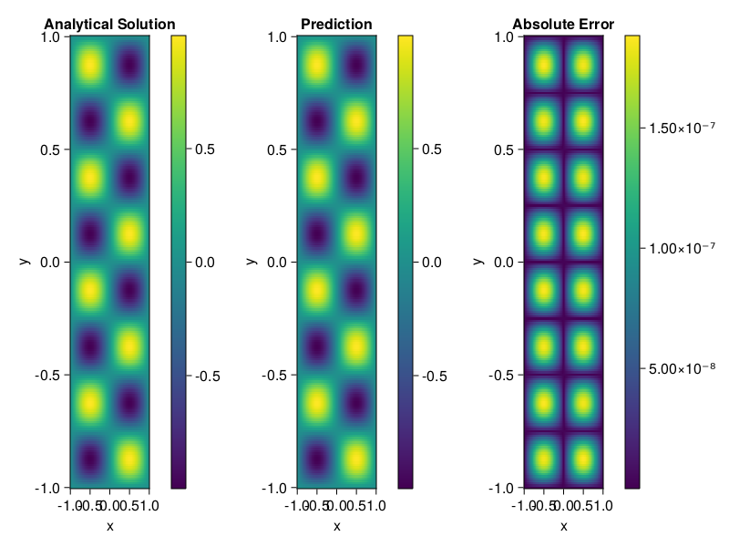

Helmholtz equation
Let us consider the Helmholtz equation in two space dimensions
\[\begin{aligned} &\Delta u(x, y)+k^{2} u(x, y)=q(x, y), \quad(x, y) \in \Omega:=(-1,1)^2 \\ &u(x, y)=0, \quad(x, y) \in \partial \Omega \end{aligned}\]
where
\[q(x, y)=-\left(a_{1} \pi\right)^{2} \sin \left(a_{1} \pi x\right) \sin \left(a_{2} \pi y\right)-\left(a_{2} \pi\right)^{2} \sin \left(a_{1} \pi x\right) \sin \left(a_{2} \pi y\right)+k^{2} \sin \left(a_{1} \pi x\right) \sin \left(a_{2} \pi y\right).\]
The excat solution is $u(x,y)=\sin{a_1\pi x}\sin{a_2\pi y}$. We chose $k=1, a_1 = 1$ and $a_2 = 4$.
using ModelingToolkit, IntervalSets, Sophon, Lux
using Optimization, OptimizationOptimJL
@parameters x,y
@variables u(..)
Dxx = Differential(x)^2
Dyy = Differential(y)^2
a1 = 1
a2 = 4
k = 1
q(x,y) = -(a1*π)^2 * sin(a1*π*x) * sin(a2*π*y) - (a2*π)^2 * sin(a1*π*x) * sin(a2*π*y) + k^2 * sin(a1*π*x) * sin(a2*π*y)
eq = Dxx(u(x,y)) + Dyy(u(x,y)) + k^2 * u(x,y) ~ q(x,y)
domains = [x ∈ Interval(-1,1), y ∈ Interval(-1,1)]
bcs = [u(-1,y) ~ 0, u(1,y) ~ 0, u(x, -1) ~ 0, u(x, 1) ~ 0]
@named helmholtz = PDESystem(eq, bcs, domains, [x,y], [u(x,y)])\[ \begin{align} \frac{\mathrm{d}^{2}}{\mathrm{d}x^{2}} u\left( x, y \right) + \frac{\mathrm{d}^{2}}{\mathrm{d}y^{2}} u\left( x, y \right) + u\left( x, y \right) =& - 166.7832748185191 \sin\left( 3.141592653589793 x \right) \sin\left( 12.566370614359172 y \right) \end{align} \]
Note that the boundary conditions are compatible with periocity, which allows us to apply BACON.
chain = BACON(2, 1, 5, 2; hidden_dims = 32, num_layers=5)
pinn = PINN(chain) # call `gpu` on it if you want to use gpu
sampler = QuasiRandomSampler(300, 100)
strategy = NonAdaptiveTraining()
prob = Sophon.discretize(helmholtz, pinn, sampler, strategy)
@time res = Optimization.solve(prob, BFGS(); maxiters=1000)u: ComponentVector{Float64}(filters = (filter_1 = (bias = [0.2520324427590091; 0.14457083580464744; … ; 0.6744645634943931; -1.0945038467487038;;]), filter_2 = (bias = [0.020719674412338344; 0.6789694576628791; … ; 0.6571762552455559; -0.4434249454248676;;]), filter_3 = (bias = [0.5791654412506465; -0.8219050984998698; … ; 0.8623768117125158; 0.7410200780989513;;]), filter_4 = (bias = [0.38354899156213795; -0.12310500702936682; … ; 0.8375658977668972; -0.32770661619951696;;]), filter_5 = (bias = [0.00010900997759889642; 0.20071635379808914; … ; -1.1014411981164143; 0.5669981948034067;;])), linear_layers = (layer_1 = (weight = [-0.038011976562237836 -0.046231417018301586 … 0.29569975681924693 -0.2636363846106212; -0.0741251928812109 -0.14934490975510306 … -0.40005635528620087 -0.07881852939209187; … ; -0.0813220166016042 0.28391018913885935 … -0.3040562048575788 0.1621454595133747; -0.22514546541107897 0.32705863408443453 … -0.6877679002195739 0.3264633013044031], bias = [0.07722321665107235; -0.09364926134178556; … ; -0.0451292541806805; -0.06141201716750018;;]), layer_2 = (weight = [0.2544557126087033 0.007254423488311104 … 0.1789021660074067 -0.1786917192210058; 0.37954284581765524 0.1930392945933313 … 0.2752992022382675 -0.09223561744215024; … ; 0.0782239221678762 0.21756594334900714 … -0.029179935438637075 -0.056333938471313995; 0.3125452779798053 -0.3384544209383808 … 0.32774578408743854 0.19269480907261502], bias = [-0.002136756499889255; -0.021443956283381766; … ; 0.008344266897561271; -0.02081772388964385;;]), layer_3 = (weight = [0.16972077310939146 0.22686120694925552 … 0.36399591849633045 0.013109812455067536; -0.33714100436078376 -0.09257897413137756 … 0.2828005084633234 0.29952744890274496; … ; -0.27020480761950944 0.22068934041007596 … 0.41588831838597906 0.34342446910415436; -0.0975598194438276 -0.30680715705717587 … 0.02209080683240552 0.1958034278627665], bias = [0.0004160532770000486; -0.0461252360870688; … ; 0.004798051929695649; -0.025596971731565978;;]), layer_4 = (weight = [0.19352444349353753 0.09746251754141902 … -0.3577174698305888 0.2018263702537116; 0.09134302044557584 -0.42627305915017494 … 0.38924915569544805 -0.3013345858848477; … ; -0.39667726546485277 -0.17155646447041137 … 0.4005007579880956 0.3065607366223744; 0.13223194257448054 -0.033603121852478116 … -0.2296440664594905 -0.23149032823290422], bias = [-0.006987067677626609; 0.011809275783660693; … ; 0.0006815114495027459; -0.012064084564727785;;])), output_layer = (weight = [-0.14171545388293327 0.061784947789819154 … 0.20237251461887484 0.06322973335946457], bias = [0.013956845390060032;;]))Let's plot the result.
phi = pinn.phi
xs, ys= [infimum(d.domain):0.01:supremum(d.domain) for d in domains]
u_analytic(x,y) = sinpi(a1*x)*sinpi(a2*y)
u_real = [u_analytic(x,y) for x in xs, y in ys]
phi_cpu = cpu(phi) # in case you are using GPU
ps_cpu = cpu(res.u)
u_pred = [sum(phi_cpu(([x,y]), ps_cpu)) for x in xs, y in ys]
using CairoMakie
axis = (xlabel="x", ylabel="y", title="Analytical Solution")
fig, ax1, hm1 = heatmap(xs, ys, u_real, axis=axis)
Colorbar(fig[:, end+1], hm1)
ax2, hm2= heatmap(fig[1, end+1], xs, ys, u_pred, axis= merge(axis, (;title = "Prediction")))
Colorbar(fig[:, end+1], hm2)
ax3, hm3 = heatmap(fig[1, end+1], xs, ys, abs.(u_pred-u_real), axis= merge(axis, (;title = "Absolute Error")))
Colorbar(fig[:, end+1], hm3)
fig